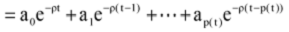

. Thus the total memory function at time t is:
. Thus the total memory function at time t is:School of Management,University of Science and Technology of China, Hefei, China.
Introduction. The media have a great influence on public perception of risk. This study sought to explore how the public perceive crisis information from news reports.
Method. We proposed a mathematical model to describe and investigate public risk perception by simulation analyses.
Analysis. The simulations were carried out using the mathematical software MATLAB, and then compared with public risk perception in three patterns of news reports which were selected from the Website of SINA.com in China.
Results. Our findings showed that the public had different perceptions of what caused the crisis depending on the type of news report. Public risk perceptions developed dynamically and the process can be divided into three general stages: the sensitive period, the rational period and the forgotten period.
Conclusions. These findings have implications for emergency management and highlight the importance of considering public perception of risk when handling emergencies.
A disaster is a sudden, emergent event, which may cause significant casualties, property losses, and endanger public safety(Norris et al. 2002). This decade has seen an increasing number of natural and man-made disasters. The 2004 Indian Ocean tsunami, the Wenchuan earthquake in 2008 in China and the earthquake in 2011 in Japan, to name a few, killed tens of thousands of people. These disasters also caused tremendous stress and a series of social problems. Effective communication is one of the key points to consider when dealing with disasters.
Researchers usually focus on the release regularity of crisis information or the communication process. Perry (2007)revealed the importance of knowing how communication channels worked in a given national context and compared the efficiency of the five principal dissemination channels: telephone calls; face-to-face conversations; radios; television and newspapers. Wei et al. (2009) proposed the growth models of news reports on disasters, which indicate how the number of news stories changes during the days that the disasters are covered by mass media. The models are very useful for the disaster decision-makers to implement effective measures in response to media reports. However, few of them attached importance on how to release emergency information strategically. This problem seems to be more serious in China. For example, in the acute stage of crisis, the public may develop a protective response because of stress, fear, anxiety and other negative emotions, which leads to herd-like behaviour, such as the phenomenon of snapping up drugs and grain during the SARS epidemic.
This article relates how the public perceive information from the media in times of crisis or disaster and compares the differences at different stages of the crisis. Furthermore, this study explores how crisis information could be communicated more effectively if public perceptions were taken into consideration. The findings provide a theoretical framework for the design of communication strategies for the general public in times of crisis.
The rest of the article proceeds as follows. The next section reviews the literature about crisis communication and the models of information release. The risk perception models are presented in the methodology and sample, and then we describe the simulation graphics and analyse how the public perceive crises from the news reports. Finally, the system framework of communication is provided.
The objective of information communication is to meet the information needs of the public and offer timely support (Keselman et al. 2005). Rapid transmission of disaster information can effectively control the impact of that disaster (Perez-Lugo 2004). Dominick (1996) also pointed out that the mass media not only have the function of information transmission, but also play the role of communication bridge, which often provides social support when disasters occur.
The process of information communication is complex. Sources of information must be trustworthy, credible, honest, transparent and accountable. A lack of trust and credibility can doom risk communication efforts (Working Group on Governance Dilemmas in Bioterrorism Response 2004). Sorenson (2000) showed that the public response to emergency information is influenced by the content of the message. Message consistency, specificity, certainty, credibility and familiarity are all important factors. Fischhoff et al. (2002) also indicated that public risk perceptions were highly dependent on how messages were framed, who communicated them, and how they were communicated. Pollard (2003) considered the public perception of information sources regarding bioterrorism. His findings highlighted the importance of selecting proper information channels. The gender, age, income, education and ethnicity of recipients of information also affect their responses. For example, women perceive risks differently to men and are more risk averse (Stern et al. 1993). Lindell and Perry(2003) also noted that race and ethnicity influence a wide range of perceptions, such as threat perception and trust of authorities. Similarly, Peacock et al.(2005) examined the influence of socio-economic and demographic characteristics such as age, income and education on shaping public perception of hurricanes.
To overcome these difficulties, some investigators explored analytical methods to study how to release emergency information. Duggan and Banwell (2004) constructed an information dissemination model for emergencies that divided the factors affecting the dissemination into internal factors and external elements, and emphasised the encoding rule of information sender. Their model is important for understanding the influence factors of information diffusion, but hardly explains the method of releasing crisis information. To improve the accuracy of emergency information dissemination, it is necessary to establish a quantitative assessment model of information impact on the public. Mullainathan (2002) established the model of public information memory based on the principles of recency, similarity and repetition. Subsequent to this study, the information manipulation model was constructed by Sarafidis (2007), as a standard dynamic optimisation problem by introducing parameters such as the principal of recency, cue dependency and rehearsal. The greatest advantage of this model is that it quantitatively assesses the effect of the information dissemination on the target groups. Wei et al. (2010) proposed an audience coverage model of crisis information release, which addresses the problem of optimal release time via television. The Bad News Response Model was constructed by Sweeny and Shepperd (2009) to predict responses to bad news and aid bad news-givers in achieving the best response, which is very helpful for dissemination of the emergency information under various circumstances.
In summary, most studies focused on the information sender, but ignored the requirements and perceptions of the recipients, and few studies examined how the crisis information is communicated by the government at a macro strategic level.
Over the past few years, a lot of work has been done on the determinants of risk perception, especially for the news media. Payne (1994) noted that media services were the essential means whereby the public became aware of catastrophes, sometimes arriving at the scene of a disaster well before local emergency services. Television was the major mass media carrier of emergency information when a crisis occurred (Juric 2006; Perry 2007; Peltz et al. 2008; Rasinski et al. 2002). In a study of 9/11, results also demonstrated that respondents directly exposed to the disaster were more like to associate television viewing with post-traumatic stress disorder and depression (Ahern et al. 2002; Pantin et al. 2003). Others argue that the content of media reports has a significant influence on the formation of public risk perceptions since the negative and sensational news shared by the mass media can mislead the public (Nacos 2005; Seeger 2002). In addition to the propagation path and content of the news, the number of news reports can also affect the public's response to crisis (CDC 2002). In conclusion, this paper has the basic assumption that the mass media has the main influence on the public's perception of risk (Koné & Mullet 1994), and the more crisis information the media provides, the stronger the effect (Wåhlberg and Sjöberg 2000).
This article quantitatively explores how public risk perceptions are affected by the news reports. However, many analyses derive theories based on qualitative content analysis of news reports. This research is based on the growth models of news stories on disasters which were proposed by Wei et al. (2009). The factors that influenced the likelihood of the growth models include disaster types, newsworthy material, disaster severity, and economic development of the affected area. Three types of growth models were proposed: the damped exponential model, the normal model , and the fluctuating model. This line of thought leads to some important questions: (1) do the public's perceptions of what caused the crisis differ according to the types of news reports they have experienced; (2) what differences in disaster perceptions are evident in the news coverage; (3) how is it possible to measure perception in the news coverage?
Risk perception is defined as the subjective assessment of risk, not actual risk. Risk perception determines how people respond to hazards (Pennings and Smidts 2000; Pennings and Smidts 2003). There is a difference between the subjective assessment of risk and the objective assessment of the actual risk. People tend to overrate the severity of the risk.
The formation of risk perception is the process of remembering information resulting from emergency communication. Emergency information acts as a stimulus or motivation to form perceptions about a given situation (Mileti and Peek 2000). When citizens receive various forms of emergency information, they look for confirmation and verification to decide whether or not the information is trustworthy and relevant. Not all emergency information stimulates the formation of risk perception, only the emergency information that people trust and decide to remember. Furthermore, the memorability of news reports is affected by changes in psychology. In a heightened state of anxiety, there is a human need to obtain and remember more information to protect self and family (Bennett 1999; Pollard 2003). We can therefore use the fluctuation in memory of crisis information as a measurement to describe public perception of risk; the greater the increment of memorability of news reports, the stronger the perception of risk.
It is important to be aware however of the wide differences in individual's memories. Age, occupation and social class all influence one's ability to remember. To simplify the model, we assume that each individual has the same memory faculty which follows the Ebbinghaus forgetting curve (Ebbinghaus 1885). We also assume that the public receive all the news disseminated by the mass media. There is another point to be considered. Given that the learning process is much shorter than the forgetting process and the mass media can be highly informative in a single day, we only consider the forgetting curve and ignore the learning process.
The public perception model is constructed as follows. Let M (t) denote the memory of the information at time t, and M (t) decay exponentially over time at a constant rate of ?, 0
(1)
Note that equation 1, separating the variables, can be written as:
(2)
It is important to stress that crisis information will be gradually spread out through various media when a crisis arises. So, we assume that is the amount of crisis information released during the period, i, the life-cycle of the crisis, and n, the amount of news coverage during the cycle. Thus the total memory function at time t is:
 (3)
(3)
Where p (t) is the usual indicator function of the growth of news reports, which can be expressed as:
(4)
refers to the amount of information released during the period i, which may follow different distribution. Besides, let Z (t) denote the memory of evolutionary function during the whole cycle of the media coverage, which refers to the increment to the memory of t-period information from the information in period t+1.
As long as, Z (t) can be neatly summarised in the following equation:

(5)
Similarly, when:
(6)
Consequently, using equation 5 and 6, we have the risk perception model:
(7)
Up to this point, we have constructed the risk perception model based on memory theory. In the next section, we will discuss how the public perceive crisis information from different types of media reports.
The typical cases were selected from the Website of SINA.com which was the most recognised Internet brand in China and among Chinese communities globally for its quick and comprehensive coverage of domestic and overseas events. The choice of the crises was based on the previous research findings revealed by Wei et al. (2009), which indicated that disasters exhibiting the normal model, the damped exponential model and the fluctuating model are more likely to be respectively man-made disasters like mine explosions and fires, natural or sudden disasters and gradual and natural disasters with more newsworthiness, lower maximum daily news reportage and longer duration. We thus chose the seep water accident in Wangjialing Coal Mine of Shanxi, the "3.11" earthquake in Japan and the oil spillage accident in Bohai Sea area as the samples.
Reports of the three most notable disasters were collected from Webpages of special coverage in SINA.com. The special coverage pages are like the special reports in BBC.com. They contain disaster news links whose contents are adopted from most of the major media agencies in China, and the news links are arranged in chronological order. To illustrate the growth in news stories, we generated statistics of the amount of news reports on a daily basis. Although some links refer to previous stories on the SINA site, we consider them all as new statistical samples. The description of the disasters is shown in Table 1.
| The model | Disaster name | Disaster data (YYYY/MM/DD) | Duration | The number of news reports |
|---|---|---|---|---|
| Normal model | The Seep Water accident in Wangjialing coal mine in Shanxi | 2010/03/28- 2010/04/17 | 21 days | 698 |
| Damped exponential model | The "3.11" earthquake in Japan | 2011/03/11- 2011/05/04 | 55 days | 6886 |
| Fluctuating model | The oil spillage accident in Bohai Sea area | 2011/07/01- 2011/10/25 | 86 days | 357 |
Equation 7 is the general model of disaster perception. In fact, the results show significant differences in the three growth models of news stories on disasters. In the following part, we will discuss the perception model in the normal model, the damped exponential model and the fluctuationg model.
The public's distinct preferences on the news reports lead to different rates of forgetting. Therefore, we give the different values of ?, 0.2, 0.5 and 0.8, and compare the public risk perceptions among them. The values of ? that are chosen can represent diverse groups of people with different characteristics. Take age for example, the three values can represent the memory ability of different age groups (Winocur 1988). Changing the model parameters may help us better understand the differences of the risk perceptions among different communities.
We got the distribution curve of the sample data taken from the nomral model case by using curve fitting. The solid line in Figure 1 is the distribution curve which is based on empirical data of the news reports, and the dotted lines are simulations which represent public risk perceptions in three different forgetting rates.
To account for the process of public risk perception, we divide the period of the crisis into the prodromal crisis stage, acute crisis stage, chronic crisis stage, and crisis resolution stage (Fink 1986). The characteristics of public risk perception relating to each stage will be discussed next.
In the prodromal and acute stages, it can be clearly observed that the public risk perception increases gradually along with the accumulation of news reports. Large volumes of information may serve as a risk amplifier, which mobilise latent fears about a particular risk and enhance the recollection of previous accidents or enlarge the extent to which particular failures, events, or consequences can be imagined (Kasperson et al. 1988). Additionally, since the massive quantity of media coverage not only reports the events but also defines and shapes the issues ((Mazur 1984), non authentic sources of risk information may also increase public perceptions of risk. The simulation results also show the growth rate of risk perception increases until it reaches the maximum point This illustrates public sensitivity to crisis information resulting from proactive behaviour such as seeking and confirming emergency information to protect self and family (Pollard 2003; Mawson 2005).
In the chronic crisis stage, the public risk perception reaches a peak and then decreases along with the dissemination of news reports. As we can see the perception of risk and the quantity of news stories peak around the same time. This can be explained by evidence from the Mt. St. Helen's eruption where detailed information led to higher levels of perceived risk (Perry et al. 1980). As the media coverage increases, the public become much more rational to make decisions of whether or what they should do as they reassess the crisis (Fitzpatrick and Mileti 1994).
So far the perception curves located above the x-axis indicate that the public's assessment of the crisis has exceeded the truth. This would directly lead to an emotional response to the crisis. It is particularly important for the emergency managers to consider public risk perception when they receive crisis communication, because they often have difficulty processing information in a state of negative emotion (Glik 2007).
In the crisis resolution stage, public risk perceptions become negative and then close to zero. The simulation result shows that public memorability of the disaster begins to gradually fade away and public risk perceptions are processed and reprocessed to fit into the context of reality (Mileti and Peek 2000). This is because the public tend to forget and exhibit lower risk estimates when they cannot receive adequate crisis information (Wiegman et al. 1989).
Overall, we can divide the evolution of public risk perception into three stages: sensitive period, rational period, and forgotten period (Figure 2).
To explore how the parameter in the model affects public risk perception, the perception curves in different forgetting rates are compared. It is clear that the forgetting rate has a positive effect on public risk perception. Fluctuations in risk perception are smoothed out and the perception period is shortened. We also take age into account. Since older people, in general, have more experience of handling dangerous situations, they are more likely to have an accurate perception of risk (Tierne 1993).
The simulation method is the same as above and the result is shown in Figure 3.
Figure 3 suggests that the simulation result is similar in part to the simulation of risk perception model in the normal model, shown in Figure 1. However, there are several differences between them. The first point is that this crisis is characterised by sudden outbreaks compared with the previous example that follows a normal distribution. Thus, there is no cognitive transition process for the public. As soon as the disaster occurs, their risk perceptions reach the maximum and so too do the number of news reports. There is a causal connection between them. When the large amount of news reports bunched together are disseminated, the memories of these press releases are reinforced in the minds of the public (Sarafidis 2007), which causes a high level of risk perception. The second difference is the higher attenuation rate of risk perception. This might be owing to a more rational and objective assessment on the risk that results from a deeper understanding and analysis of the large amount of news reports released in the beginning. This will cause public perception to enter the forgotten period much earlier.
The news reports of the oil spillage accident in the Bohai sea area relative to the data of the disaster is presented by a scatter plot in Figure 4
It is obvious that this crisis exhibits frequent fluctuations, has great newsworthiness and the longest life-cycle. Wåhlberg and Sjöberg (2000) indicated that it is exceedingly difficult to predict risk perceptions by processing the available information, thus we take each news point as a separate incident. The conclusions above can be used to analyse the risk perception that is composed of the normal model and the damped exponential model. From the simulation results in Figure 5 (the simulation method is also the same as above) the deduction can also be proved. Compared with the first two models from the simulation, the public perception of risk here remains relatively low level since first entering the forgotten period. It is essential for the government to realise that the dissemination of emergency information will be most needed in the prophase of the crisis due to the higher risk perception.
This article proposes a model to examine how the public perceive different types of crisis. It is based on the growth models of news reports on disasters, and presents a new theoretical perspective on crisis management by integrating the memory theory into current research of crises. The findings of this study are as follows: (1) public perceptions of what caused the crisis depend on the type of news report they have experienced (2) the public perception of the crisis develops in a dynamic way, depending on the crisis situation, the process of which can be divided into three stages: the sensitive period, the rational period, and the forgotten period.
This study has implications on how governments communicate in times of crisis and how they are managed at the macro level. As shown in Figure 5, the framework provides a new way of thinking about crisis communication from the perspectives of situation assessment, communication channels, monitoring information and message coding. The focus of the framework is to guide public perception by identifying the channel, the timing, and the content of emergency information.
Since public risk perceptions differ in different types of crisis, policymakers should firstly build a situation assessment system to identify the growth model of news reports. This will help to develop policies that relate to public risk perceptions on the basis of the analysis and conclusions above. To disseminate the emergency information precisely, the government needs to know and fulfil public demands for information which depend on the evolution process of public perception. So, it is necessary to choose a suitable release pattern to match the characteristics of public perception in different types of crises. The choice of communication channel and the timing and content of emergency information is especially important in the sensitive period of public perception. The last step is to balance the number of news reports by monitoring crisis information dynamically so that the government can prevent the transformation among the three growth models of news reports. This will greatly improve the efficiency of emergency management.
The authors are grateful to the editor and two anonymous referees for their helpful and constructive comments and suggestions that improved the quality of this paper. This research is funded by the National Natural Science Foundation of China (61004108,91024027, 71121061).
Jiuchang Wei is Associate Professor of School of Management at University of Science and Technology of China. He received his PhD in Management Science and Engineer from University of Science and Technology of China. His primary research interests are crisis management, sustainable development in China, information management. He can be contacted at: Weijc@ustc.edu.cn.
Fei Wang is a Ph.D. student in School of Management, University of Science and Technology of China, P.R. China. His research interests include information management and crisis communication. He can be contacted at: wf504202@mail.ustc.edu.cn.
Dingtao Zhao is Professor of School of Management at University of Science and Technology of China. His primary research interests are strategy management, sustainable development in China, crisis management. He can be contacted at: Box@ustc.edu.cn.